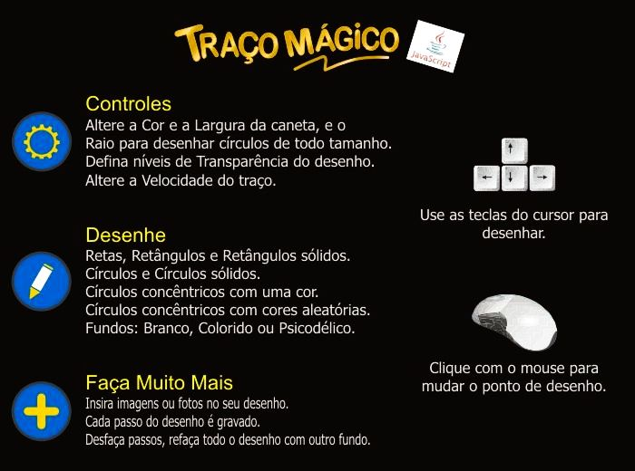

|  | ||
CONCEITOS BÁSICOS
O
Você pode desenhar com
Os Cursores
O Cursor: As ferramentas de Formas utilizam um ou dois cursores:
A Tela de DesenhoA Tela de Desenho é um espaço fixo de 950 x 500 pixels onde o usuário pode desenhar, inserir imagens e textos, ela é composta de 2 camadas
CONTROLES BÁSICOS
O
Tabela de Cores
Clicando no Círculo da Cor Selecionada abrirá uma janelinha onde você poderá escolher entre as cores pré-selecionadas ou
usar o misturador para ter acesso a milhões de cores.
Largura do Traço
O Controle Largura do Traço afeta todas as Ferramentas de Formas.
O número que aparece ao lado do título é a largura definida. transparência de Objetos
O Controle Transparência afeta todas as ferramentas de Forma e de Fundo com exceção de Velocidade do CursorO Controle Velocidade afeta apenas a movimentação feita com as setas do teclado, a velocidade varia de 2 a 10. Utilizando valores altos de Velocidade juntamente valores baixos do controle Largura conseguimos traço pontilhado. Raio
O Controle Raio afeta todas as ferramentas de Forma baseadas em círculos, define o tamanho final do círculo. |
FERRAMENTASFORMAS
|
As formas incluem Retas, Retângulos e Círculos.
TEXTO
A ferramenta Texto permite inserir textos de até 150 caracteres na imagem com o tamanho entre 10 e 100 pontos.
Permite também inserir Emojis diretamente na Tela.
IMAGEM (abrir e salvar)
A ferramenta Imagem permite inserir uma imagem de até 1Mb (Megabyte) na Tela de Desenho.
FUNDO
A ferramenta Fundo permite alterar o fundo da Tela de Desenho independentemente.
Utilize uma imagem, uma cor ou desenhos aleatórios de círculos e retângulos coloridos.
É possível combinar todas e ainda combinar com o controle Transparência.
A ferramenta Fundo permite utilizar uma imagem com transparência.
GRAVAÇÃO
A ferramenta Gravação grava os passos do desenho permitindo que o usuário apague passos a qualquer momento.
Todos os passos são gravados, desde o posicionamento do cursor na tela até as mudanças de fundo,
uma maneira prática de dizer isso é: todos os passos das ferramentas à esquerda da ferramenta Gravação são gravados.
APAGAR E REINICIAR
A ferramenta Apagar permite apagar a tela e a ferramenta Reset reinicia todo o programa.
|